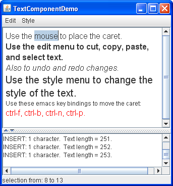
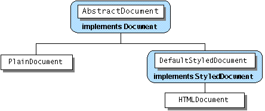

Lección: Usando Componentes Swing
Sección: Usando Componentes de Texto
Características del Componente de Texto
La clase
JTextComponent es la base para los componentes de texto de Swing. Esta clase ofrece las
siguientes características personalizables para todos sus descendientes:
- Un modelo, conocido como un documento, que gestiona el contenido del componente.
- Una vista, la cual visualiza el componente en pantalla.
- Un controlador, conocido como un kit de editor, que lee y escribe texto e implementa las capacidades de edición con acciones.
- Soporte para deshacer y rehacer infinito.
- Un signo de intercalación (o cursor) enchufable y soporte para oyentes del cambio de cursor y filtros de navegación.
Vea el ejemplo llamado TextComponentDemo para explorar estas capacidades. Aunque el ejemplo
TextComponentDemo contiene una instancia personalizada de JTextPane, las
características descritas en esta sección son heredadas por todas las subclases de JTextComponent.

El componente de texto de más arriba es el panel de texto personalizado. El componente de texto de más abajo es
una instancia de JTextArea, la cual sirve como un histórico que informa de todos los cambios hechos
al contenido del panel de texto. La línea de estado en la parte inferior de la ventana informa de la ubicación
de la selección o de la posición del cursor en función del texto seleccionado.
Pruebe esto:
-
Pulse el botón Lanzar para ejecutar TextComponentDemo usando
Java™ Web Start
(
descargue el EDD 7 o posterior
)
. Alternativamente, para compilar y ejecutar el ejemplo por usted mismo, consulte el
índice de ejemplos.

- Use el ratón para seleccionar texto y coloque el cursor en el panel de texto. La información sobre la selección y el cursor es visualizada al final de la ventana.
- Introduzca texto tecleando en el teclado. Puede mover el cursor alrededor usando las teclas de fecha del teclado o los cuatro atajos de teclado de emacs: Ctrl-B (un carácter hacia atrás), Ctrl-F (un carácter hacia delante), Ctrl-N (abajo una línea), and Ctrl-P (arriba una línea).
- Abra el menú de Edición, y use los items de menú para editar texto en el panel de texto. Haga una selección en el área de texto al final de ventana. Debido a que el área de texto no es editable, sólo algunos de los comandos del menú Editar, como copiar al portapapeles, funcionan. Es importante tener en cuenta, sin embargo, que el menú funciona en ambos componentes de texto.
- Use los ítems del menú Estilo para aplicar diferentes estilos al texto en el panel de texto.
Usando el ejemplo TextComponentDemo como un punto de referencia, esta sección cubre los siguientes
tópicos:
- Asociar Acciones de Texto con Menús y Botones
- Asociar Acciones de Texto con Pulsaciones de Teclas
- Implementar Deshacer y Rehacer
- Conceptos: Acerca de los Documentos
- Implementar un Filtro de Documento
- Monitorizar Cambios en un Documento
- Monitorizar los Cambios de Selección y del Cursor
- Conceptos: Acerca de los Kits de Editor
Asociar Acciones de Texto con Menús y Botones
Todos los componentes de texto de Swing soportan los comandos de edición estándar tales como cortar, copiar,
pegar, e insertar caracteres. Cada comando de edición es representado e implementado por un objeto
Action. (Para aprender más sobre las acciones vea
Cómo Usar Acciones). Las acciones le
permiten asociar un comando con un componente del IGU, tal como un item de menú o un botón, y de esta forma
construir un IGU alrededor de un componente de texto.
Puede invocar el método getActions en cualquier componente de texto para recibir un vector
conteniendo todas las acciones soportadas por este componente. Es también posible cargar el vector de acciones
en un HashMap de forma que su programa pueda recuperar una acción por nombre. Aquí tiene el código
del ejemplo TextComponentDemo que toma las acciones del panel de texto y las carga en un
HashMap.
private HashMap<Object, Action> createActionTable(JTextComponent textComponent) {
HashMap<Object, Action> actions = new HashMap<Object, Action>();
Action[] actionsArray = textComponent.getActions();
for (int i = 0; i < actionsArray.length; i++) {
Action a = actionsArray[i];
actions.put(a.getValue(Action.NAME), a);
}
return actions;
}
Aquí está el método para recuperar una acción por su nombre desde el mapa hash:
private Action getActionByName(String name) {
return actions.get(name);
}
Puede usar ambos métodos literalmente en sus programas.
El siguiente código muestra cómo el item de menú Cortar es creado y asociado con la acción de eliminar texto del componente de texto.
protected JMenu createEditMenu() {
JMenu menu = new JMenu("Edit");
...
menu.add(getActionByName(DefaultEditorKit.cutAction));
...
Este código obtiene la acción por nombre usando el método práctico mostrado previamente. Entonces añade la
acción al menú. Eso es todo lo que necesita hacer. El menú y la acción se ocupan de todo lo demás. Dese cuenta
de que el nombre de la acción viene desde
DefaultEditorKit. Este kit ofrece acciones para la edición básica de texto y es la
superclase para todos los kits de editor ofrecidos por Swing. Así sus capacidades están disponibles para
todos los componentes de texto a menos que sean sobreescritos por una personalización.
Por eficiencia, los componentes de texto comparten acciones. El objeto Action devuelto por
getActionByName(DefaultEditorKit.cutAction) es compartido por el JTextArea no editable
al final de la ventana. Esta característica de reparto tiene dos importantes ramificaciones:
-
En general, usted no modificará objetos
Actionque obtiene de los kits de editor. Si usted lo hace, los cambios afectarán a todos los componentes de texto en su programa. -
Los objetos
Actionpueden operar sobre otros componentes de texto en el programa, algunas veces más de lo que usted querría. En este ejemplo, incluso aunque no es editable, laJTextAreacomparte acciones con elJTextPane. (Seleccione algún texto en el área de texto, entonces elija el item de menu cortar-al-portapapeles. Oirá un pitido porque el área de texto no es editable). Si no quiere compartir, instancie el objetoActionusted mismo.DefaultEditorKitdefine una variedad de útiles subclasesAction.
Aquí está el código que crea el menú Estilo y coloca el item de Menú Negrita en él:
protected JMenu createStyleMenu() {
JMenu menu = new JMenu("Style");
Action action = new StyledEditorKit.BoldAction();
action.putValue(Action.NAME, "Bold");
menu.add(action);
...
El StyledEditorKit ofrece subclases Action para implementar comandos de edición para
texto estilizado. Observará que en lugar de obtener la acción del kit del editor, este código crea una instancia
de la clase BoldAction . De esta forma, esta acción no está compartida con ningún otro componente
de texto, y cambiar su nombre no afectará a ningún otro componente de texto.
Asociar Acciones de Texto con Pulsaciones de Teclas
Además de asociar una acción con un componente del IGU, puede también asociar una acción con una pulsación de tecla usando el mapa de entrada de un componente de texto. Los mapas de entrada están descritos en Cómo Usar Atajos de Teclado.
El panel de texto en el ejemplo TextComponentDemo soporta cuatro atajos de teclado no ofrecidos por
defecto.
- Ctrl-B para mover el cursor hacia atrás un carácter
- Ctrl-F para mover el cursor hacia delante un carácter
- Ctrl-N para mover el cursor hacia abajo una línea
- Ctrl-P para mover el cursor hacia arriba una línea
El código siguiente añade el atajo de teclado Ctrl-B al panel de texto. El código para añadir los otros tres atajos listados encima es similar.
InputMap inputMap = textPane.getInputMap();
KeyStroke key = KeyStroke.getKeyStroke(KeyEvent.VK_B,
Event.CTRL_MASK);
inputMap.put(key, DefaultEditorKit.backwardAction);
Primero, el código obtiene el mapa de entrada del componente de texto. A continuación, encuentra un objeto
KeyStroke que representa la secuencia de teclas Ctrl-B. Finalmente, el código enlaza la
pulsación de la tecla a la Acción que mueve el cursor hacia atrás.
Implementar Deshacer y Rehacer
Implementar deshacer y rehacer tiene dos partes:
- Recordar las ediciones que no se pueden modificar.
- Implementar los comandos deshacer y rehacer y ofrecer un interfaz de usuario para ellos.
Parte 1: Recordar las ediciones que no se pueden modificar
Para soportar deshacer y rehacer, un componente de texto debe recordar cada edición que ocurra, el orden de las
ediciones, y qué es necesario para deshacer cada edición. El programa de ejemplo usa una instancia de la clase
UndoManager para gestionar su lista de ediciones que no se pueden modificar. El gestor de
deshacer es creado donde las variables miembro están declaradas:
protected UndoManager undo = new UndoManager();
Ahora, veamos como el programa descubre ediciones no reversibles y las añade al gestor de deshacer.
Un documento notifica a los oyentes interesados si una edición no reversible ocurre en el contenido del
documento. Un paso importante en la implementación del deshacer y rehacer es registrar un oyente de ediciones
no reversibles en el documento del componente de texto. El siguiente código añade una instancia de
MyUndoableEditListener al documento del panel de texto:
doc.addUndoableEditListener(new MyUndoableEditListener());
El oyente de ediciones no reversibles usado en nuestro ejemplo añade la edición a la lista del gestor de deshacer:
protected class MyUndoableEditListener
implements UndoableEditListener {
public void undoableEditHappened(UndoableEditEvent e) {
//Recuerda las ediciones y actualiza los menúe
undo.addEdit(e.getEdit());
undoAction.updateUndoState();
redoAction.updateRedoState();
}
}
Note que este método actualiza dos objetos: undoAction y redoAction. Estos son los
objetos acción enlazados a los items de menú Deshacer y Rehacer, respectivamente. El siguiente paso le muestra
cómo crear los items de menú y cómo implementar las dos acciones. Para información general sobre los oyentes de
ediciones no reversibles y los eventos de ediciones no reversibles, vea
Cómo Escribir un Undoable Edit Listener.
Nota:
Por defecto, cada edición no reversible deshace una entrada de carácter simple. Es posible con algún esfuerzo agrupar las ediciones de forma que una serie de pulsacoines de tecla estén combinadas en una edición no reversible. Agrupar las ediciones de esta manera requerirá que defina una clase que intercepte los eventos de ediciones no reversibles desde el documento, combinándolas si es apropiado y reenviando los resultado a su oyente de ediciones no reversibles.
Parte 2: Implementar los comandos deshacer y rehace
El primer paso en implementar deshacer y rehacer es crear las acciones a colocar en el menú Edicióm.
JMenu menu = new JMenu("Edit");
//Deshacer y reahcer son acciones de nuestra propia creación
undoAction = new UndoAction();
menu.add(undoAction);
redoAction = new RedoAction();
menu.add(redoAction);
...
Las acciones deshacer y rehacer son implementadas por subclases personalizadas AbstractAction:
UndoAction y RedoAction, respectivamente. Estas clases son clases interiores de la
clase primaria del ejemplo.
Cuando el usuario invoca el comando deshacer, el método actionPerformed de la clase
UndoAction es llamado:
public void actionPerformed(ActionEvent e) {
try {
undo.undo();
} catch (CannotUndoException ex) {
System.out.println("Incapaz de deshacer: " + ex);
ex.printStackTrace();
}
updateUndoState();
redoAction.updateRedoState();
}
Este método llama al método undo del gestor de deshacer y actualiza los items de menú para reflejar
el nuevo estado deshacer/rehacer.
Similarmente, cuando el usuario invoca el comando rehacer, el método actionPerformed
de la clase RedoAction es llamado:
public void actionPerformed(ActionEvent e) {
try {
undo.redo();
} catch (CannotRedoException ex) {
System.out.println("Incapaz de rehacer: " + ex);
ex.printStackTrace();
}
updateRedoState();
undoAction.updateUndoState();
}
Este método es similar al de deshacer, excepto que llama al método redo del gestor de deshacer.
La mayoría del código en las clases UndoAction y RedoAction está dedicado a habilitar
u deshabilitar las acciones como sea apropiado al estado actual, y cambian los nombres de los items de menú para
reflejar la edición a ser deshecha o rehecha.
Nota:
La implmentación de deshacer y rehacer en el ejemplo TextComponentDemo fue tomada de la demo
NotePad que viene con el software del KDJ (JDK, en inglés). Muchos programadores también podrán
copiar esta implementación de deshacer / rehacer sin modificación.
Conceptos: Acerca de los Documentos
Como otros componentes de Swing, un componente de texto separa sus datos (conocidos como el modelo) de su vista de los datos. Si uste no está aún familiarizado con la división modelo-vista usada por los componentes de Swing, refíerase a Cómo Usar Modelos.
Un modelo de un componente de texto es conocido como un documento y es una instancia de una clase que
implementa el interfaz
Document
. Un documento ofrece los siguientes servicios a un componente de texto:
-
Contiene el texto. Un documento almacena el contenido textual en objetos
Element, los cuales pueden representar cualquier estructura lógica de texto, tales como parráfos, o texto que comparten estilos. No describiremos los objetosElementaquí. -
Ofrece soporte para editar el texto a través de los métodos
removeyinsertString. - Notifica a los oyentes del documento y a los oyentes de ediciones no reversibles de los cambios en el texto.
-
Gestiona los objetos
Position, los cuales monitorizan una ubicación particular dentro del texto incluso mientraws el texto es modificado. - Le permite obtener información sobre el texto, tal como su longitud, y segmentos del texto como una cadena.
El paquete de texto de Swing contiene una subinterfaz de Document,
StyledDocument, que añade soporte para marcar el texto con estilos. Una subclase de
JTextComponent, JTextPane, requiere que su documento sea un
StyledDocument más que simplemente un Document.
El paquete javax.swing.text ofrece la siguiente jerarquía de clases documento, las cuales
implementan los documentos especializados para las varias subclases de JTextComponent:

Un PlainDocument es el documento por defecto para los campos de texto, los campos de contraseña y
las áreas de texto. PlainDocument ofrece un contenedor básico para el texto donde todo el texto
es mostrado con la misma fuente. Incluso aunque un panel editor es una componente de texto estilizado, usa una
instancia de PlainDocument por defecto. El documento por defecto para un JTextPane
estándar es una instancia de DefaultStyledDocument ─ un contenedor para texto
estilizado en ninguna forma particular. Sin embargo, la instancia de documento usada por un panel de edición
particular o panel de texto depende del tipo de contenido vinculado a él. Si usted usa el método
setPage para cargar texto en un panel de edición o panel de texto, la instancia del documento usado
por el panel podría cambiar. Refíerase a
Cómo Usar Paneles de Edición y Paneles de Texto para los detalles.
Aunque puede establecer el documento de un componente de texto, es usualmente más facil permitirle establecerlo
automáticamente, y si es necesario usar un filtro de documento para cambiar cómo los datos de un
componente de texto son establecidos. Puede implementar ciertas personalizaciones ya sea instalando un filtro
de documento o reemplazando el documento del componente de texto con uno propio. Por ejemplo, el panel de texto
en el ejemplo TextComponentDemo tiene un filtro de documento que limita el número de caracteres que
el panel de texto puede contener.
Implementar un Filtro de Documento
Para implementar un filtro de documento, cree una subclase de
DocumentFilter y entonces engánchela a un documento usando el método
setDocumentFilter definido en la clase AbstractDocument. Aunque es posible tener
documentos que no desciendan de AbstractDocument, por deefecto los componentes de texto de
Swing usan las subclases de AbstractDocument para sus documentos.
La aplicación TextComponentDemo tiene un filtro de documento,
DocumentSizeFilter
, que limita el número de caracteres que el panel de texto puede contener. Aquí está el código que crea el
filtro y lo engancha al documento del panel de texto:
...//Donde las variables miembro son declaradas:
JTextPane textPane;
AbstractDocument doc;
static final int MAX_CHARACTERS = 300;
...
textPane = new JTextPane();
...
StyledDocument styledDoc = textPane.getStyledDocument();
if (styledDoc instanceof AbstractDocument) {
doc = (AbstractDocument)styledDoc;
doc.setDocumentFilter(new DocumentSizeFilter(MAX_CHARACTERS));
}
Para limitar los caracteres permitidos en el documento, DocumentSizeFilter sobreescribe el método
insertString de la clase DocumentFilter, la cual es llamada cada vez que se inserta
texto en el documento. También sobreescribe el método replace, que es más probable que se llame
cuando el usuario pega en un nuevo texto. En general, la inserción de texto puede resultar cuando el usuario
teclea o pega nuevo texto, o cuando el método setText es llamado. Aquí está la implementación del
método insertString de la clase DocumentSizeFilter:
public void insertString(FilterBypass fb, int offs,
String str, AttributeSet a)
throws BadLocationException {
if ((fb.getDocument().getLength() + str.length()) <= maxCharacters)
super.insertString(fb, offs, str, a);
else
Toolkit.getDefaultToolkit().beep();
}
El código para replace es similar. El parámetro
FilterBypass a los métodos definidos por la clase DocumentFilter es
simplemente un objeto que habilita al documento ser actualizado de forma segura en multihilo.
Debido a que el filtro de documentos anterior se refiere a las adicciones a los datos del documento, sólo
sobreescribe los métodos insertString y replace. La mayoría de los filtros de
documentos sobreescribirán también el método remove de DocumentFilter.
Monitorizar Cambios en un Documento
Puede registrar dos tipos diferentes de oyentes sobre un documento: oyentes de documento y oyentes de ediciones no reversibles. Esta subsección describe los oyentes de docomento. Para información sobre los oyentes de ediciones no reversibles, refíerase a Implementar Deshacer y Rehacer.
Un documento notifica a los oyentes de documento registrados de los cambios al documento. Use un oyente de documento para crear una reacción cuando el sea insertado o eliminado de un documento, o cuando el estilo de texto cambia.
El programa TextComponentDemo usa un oyente de documento para actualizar el historial de cambios
cuando un cambio es hecho al panel de texto. La siguiente línea de código registra una instancia de la clase
MyDocumentListener como un oyente del documento del panel de texto:
doc.addDocumentListener(new MyDocumentListener());
Aquí está la implementación de la clase MyDocumentListener:
protected class MyDocumentListener implements DocumentListener {
public void insertUpdate(DocumentEvent e) {
displayEditInfo(e);
}
public void removeUpdate(DocumentEvent e) {
displayEditInfo(e);
}
public void changedUpdate(DocumentEvent e) {
displayEditInfo(e);
}
private void displayEditInfo(DocumentEvent e) {
Document document = (Document)e.getDocument();
int changeLength = e.getLength();
changeLog.append(e.getType().toString() + ": "
+ changeLength + " character"
+ ((changeLength == 1) ? ". " : "s. ")
+ " Text length = " + document.getLength()
+ "." + newline);
}
}
El oyente implementa tres métodos para manejar tres tipos diferentes de eventos del documento: inserción,
eliminación y cambios de estilo. Las instancia de StyledDocument pueden dispara los tres tipos de
eventos. Las instancias de PlainDocument disparan sólo los eventos de inserción y eliminación. Para
información general sobre los oyentes del documento y eventos del documento, vea
Cómo Escribir un Document Listener.
Recuerde que el filtro de documento para este panel de texto limita el número de
caracteres permitidos en el documento. Si intenta añadir más texto del que el filtro de documento permite, el
filtro de documento bloqueará el cambio y el método del oyente insertUpdate no será llamado. Los
oyentes de documento son notificados de los cambios sólo si el cambio ha ocurrido ya.
Puede querer cambiar el texto del documento dentro de un oyente de documento. Sin embargo, nunca debería modificar el contenido de un componente de texto desde dentro de un oyente de documento. Si lo hace, el programa probablemente se bloqueará. En vez de eso, puede usar un campo de texto formateado o proveer un filtro de documento.
Monitorizar los Cambios de Selección y del Cursor
El programa TextComponentDemo usa un oyente de cursor para mostrar la posición actual del cursor o,
si se ha seleccionado texto, la extensión de la selección.
La clase del oyente del cursor en este ejemplo es una subclase de JLabel. Aquí está el código que
crea la etiqueta oyente del cursor y la hace un oyente del cursor del panel de texto:
//Crea el área de estado
CaretListenerLabel caretListenerLabel = new CaretListenerLabel(
"Caret Status");
...
textPane.addCaretListener(caretListenerLabel);
Un oyente de cursor debe implementar un método, caretUpdate, el cual es llamadao cada vez que el
cursor se mueve o se cambia la selección. Aquí está la implementación de caretUpdate de
CaretListenerLabel:
public void caretUpdate(CaretEvent e) {
//Obtiene la ubicación en el texto
int dot = e.getDot();
int mark = e.getMark();
if (dot == mark) { // sin selección
try {
Rectangle caretCoords = textPane.modelToView(dot);
//Lo convierte a coordenadas de vista
setText("caret: text position: " + dot +
", view location = [" +
caretCoords.x + ", " + caretCoords.y + "]" +
newline);
} catch (BadLocationException ble) {
setText("caret: text position: " + dot + newline);
}
} else if (dot < mark) {
setText("selection from: " + dot + " to " + mark + newline);
} else {
setText("selection from: " + mark + " to " + dot + newline);
}
}
Como puede ver, este oyente actualiza su etiqueta de texto para reflejar el estado actual del cursor o la selección. El oyente obtiene la información a mostrar del objeto de evento del cursor. Para información general sobre los oyentes del cursor y los eventos del cursor, vea Cómo Escribir un Caret Listener.
Como con los oyentes del documento, un oyente del cursor es pasivo. Reacciona a cambios en el cursor o en la selección, pero no cambia el cursor o la selección por sí mismo. Si quiere cambiar el cursor o la selección, use un filtro de navegación o un cursor personalizado.
Implementar un filtro de navegación es similar a implementar un filtro de documento. Primero, escriba una
subclase de
NavigationFilter. Entonces enganche una instancia de la subclase a un componente de texto
con el método setNavigationFilter.
Podría crear un cursor personalizado para personalizar la apariencia de un cursor. Para crear un cursor
personalizado, escriba una clase que implemente el interfaz
Caret
─ quizás extendiendo la clase
DefaultCaret. Entonces provea una instancia de su clase como un argumento al método
setCaret del componente de texto.
Conceptos: Acerca de los Kits de Editor
Los componentes de texto usan un EditorKit para unir las distintas partes de un componente de texto
juntas. El kit editor ofrece la factoría de vista, el documento, el cursor, y las acciones. Un kit editor
también lee y escribe documentos de un formato particular. Aunque todos los componentes de texto usan kits
editor, algunos componentes ocultan los suyos. Usted no puede establecer u obtener el kit editor usado por un
campo de texto o un área de texto. Los paneles de edición y los paneles de texto ofrecen el método
getEditorKit para obtener el kit editor actual y el método setEditorKit para
cambiarlo.
Para todos los componentes, la clase JTextComponent ofrece la IPA para que usted indirectamente
invoque o personalize algunas capacidades del kit editor. Por ejemplo, JTextComponent ofrece los
métodos read y write, los cuales invocan los métodos read y
write del kit editor. JTextComponent también ofrece un método,
getActions, el cual devuelve todas las acciones soportadas por un componente.
El paquete de texto de Swing ofrece los siguientes kits de editor:
-
DefaultEditorKit -
Lee y escribe texto plano, y ofrece un conjunto básico de comandos de edición. Los detalles sobre cómo
el sistema de texto trata los saltos de línea pueden ser encontrados en la documentación del IPA de
DefaultEditorKit. Brevemente, el carácter '\n' es usado internamente, pero el documento o los separadores de línea de la plataforma son usados cuando se escriben ficheros. Todos los otros kits de editor son descendientes de la claseDefaultEditorKit. -
StyledEditorKit -
Lee y escribe texto estilizado, y ofrece un conjunto mínimo de accinoes para texto estilizado. Esta clase es
una subclase de
DefaultEditorKity es el kit de editor usado porJTextPanepor defecto. -
HTMLEditorKit -
Lee, escribe, y edita HTML. Este es una sublcase de
StyledEditorKit.
Cada uno de los kits de editor listados encima han sido registrados con la clase JEditorPane
y asociados con el formato de texto que el kit lee, escribe, y edita. Cuando un fichero es cargado dentro de un
panel de edición, el panel comprueba el formato del fichero contra sus kits registrados. Si un kit registrado es
encontrado que soporta ese formato de fichero, el panel usa el kit para leer el fichero, mostrarlo, y editarlo.
Así, el panel de edición efectivamente se transforma a sí mismo en un editor para ese formato de texto. Puede
extender JEditorPane para soportar su propio formato de texto creando un kit de editor para él, y
entonces usar registerEditorKitForContentType del JEditorPane para asociar su kit con
su formato de texto.